Citazione dal prof. di Reti Logiche: "dopo che seguite il corso, anche andà dar macellaio diventa un problema di ricerca operativa. [...] La cosa positiva di essere un ingegnere informatico è che vi chiameranno tutti per organizzare le partite di 'arcetto".
La ricerca operativa si occupa di risolvere problemi con variabili decisionali in presenza di risorse limitate. Essa si basa su1. Problemi decisionali,2. Modelli matematici,3. Teoria,4. Algoritmi,5. Feedback;Il modello matematico è composto da1. Variabili decisionali,2. Funzione obbiettivo,3. Vincoli.3. La programmazione lineare (PL) è quella branca della ricerca operativa che si occupa di studiare algoritmi di risoluzione per problemi di ottimizzazione lineari.1. Problema di produzioneEsempio: una ditta produce LaminatoA, LaminatoB. Per la produzione, si deve passare dai reparti Materie Prime, Taglio, FinituraA, FinituraB. Il guadagno è di €8.400 e €11.200 rispettivamente. Ogni reparto impiega un certo numero di ore, vincolate secondo la seguente tabella.
Reparto
Vincolo
LaminatoA
LaminatoB
Materie Prime
120h
30h
20h
Taglio
80h
10h
20h
FinituraA
62h
20h
FinituraB
105h
30h
Abbiamo una funzione obbiettivo da massimizzare, e dei vincoli. Una regione ammissibile è l'insieme delle soluzioni ammissibili i.e. le soluzioni che rispettano i vincoli. La soluzione ottima è, tra le funzioni ammissibili, quella che massimizza la funzione obbiettivo.Modello matematico: a
max8.4xA+11.2xB,
f:R2→R
30xA+20xB⩽120
10xA+20xB⩽80
20xA⩽62
30xB⩽105
Siano A=a
30
20
10
20
20
0
0
30
-1
0
0
-1
, b=a
120
80
62
105
0
0
, c=a
8.4
11.2
∴(p)=a
maxcT⋅x
A⋅x⩽b
Abbiamo aggiunto il vincolo (xA,xB)⩾0⟺-xA⩽0,-xB⩽0La regione ammissibile è un'intersezione di semipiani i.e. un poliedro in R2
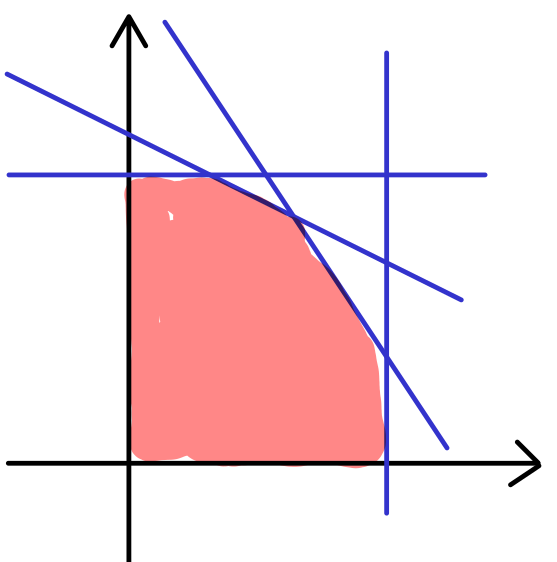
Problema di produzione:Problema di ottimizzazione in cui si devono allocare risorse limitate (materie prime, tempo, forza lavoro...) per massimizzare il guadagno, o minimizzare i costi, rispettando una serie di vincoli (capacità produttiva, disponibilità di risorse, domanda di mercato...)(p)a
maxcTx
Ax⩽b
x⩾0
massimizza il guadagno(q)a
mincTx
Ax⩾b
x⩾0
minimizza il costo
1.1. Formati standardUn problema di programmazione lineare (PL) è un problema di min / max di una funzione lineare soggetta a vincoli lineari. Un formato standard è un formato che racchiude tutti i problemi. (p)=a
min/maxcT⋅x
Ax⩽b
Bx⩾d
Cx=e
Definizione (formato primale standard): Un problema di PL in formato primale standard è (p)=a
maxcT⋅x
Ax⩽b
dove c,x∈Rn, A∈Rn×m, b∈Rm
Per trasformare un problema di PL da un formato all'altro si devono usare alcuni "trucchi":• ⩾⟷⩽moltiplicando per -1• =⟷⩽imponendo che sia ⩽,⩾contemporaneamente• max⟷minpoiché maxf=-min-f1. In seguito ne vedremo anche altri due:• ⩽→=,⩾• x⩾0→xi=x++i-x+i, x++i⩾x+i⩾01.2. Regione ammissibile e soluzione ottimaLa regione ammissibile di un problema di PL è un poliedro P, definibile in due modi:1. Poliedro algebrico:Ax⩽b2. Poliedro geometrico: intersezione di un numero finito di semispazi chiusi i.e. il cui bordo appartiene ai vincoli (⩽)Osservo che ∇(c⋅x)=c≠0. Quindi, per il teorema di Fermat, i punti interni non possono essere di massimo. Per il teorema di Weierstrass, la soluzione, se esiste, deve trovarsi sul bordo.
Proposizione: • (p)=+∞, se il poliedro è illimitato. Vuol dire che ci siamo dimenticati dei vincoli• P=∅ i.e.maxc⋅x=-∞⟹il poliedro è vuoto, ci sono troppi vincoli. In tal caso si può fare un ranking dei vincoli ed eliminare quello meno importante
Per trovare la soluzione ottima graficamente si usano le linee di isoguadagno, che hanno equazione c⋅x=k
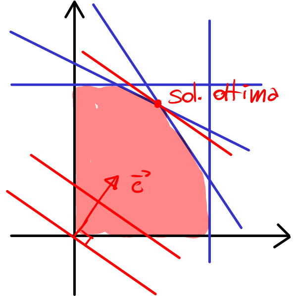
Figura 1:le linee di isoguadagno sono perpendicolari a c.
Il vettore c è il gradiente di c⋅x, ovvero la direzione di massima crescenza della funzione obbiettivo. Devo quindi trovare l'ultimo punto prima che la retta di isoguadagno esca dal poliedro.Attenzione: non è vero in generale che la soluzione ottima sta sul vertice. Può accadere che c sia perpendicolare allo spigolo; in tal caso ci sono infinite soluzioni, poiché la linea di isoguadagno passa per tutto lo spigolo. Il cono di competenza indica il range di vettori c tali per cui un certo vertice è soluzione ottima.
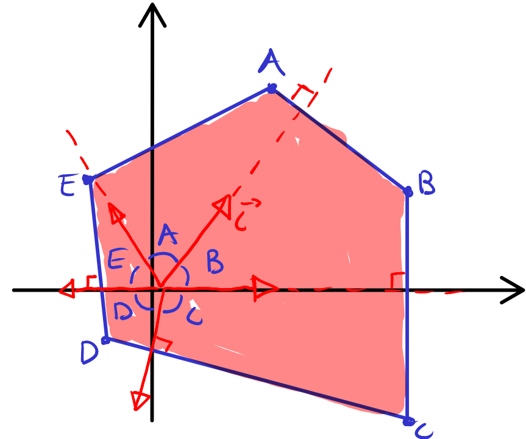
Figura 2:coni di competenza. Se, per esempio, il vettore c si trova nell'angolo 𝛽, lo spigolo B è la soluzione ottima.
Proposizione: se ci sono due soluzioni ottime, ci sono infinite soluzioni ottime.
Dimostrazione:Siano z,w soluzioni ottime. Il segmento che le congiunge ha equazione 𝜆z+(1-𝜆)w, 𝜆∈[0,1].La funzione obbiettivo del segmento è il segmento stesso poiché cT(𝜆z+(1-𝜆)w)==𝜆cTz(1-𝜆)cTw=𝜆v(1-𝜆)v=v. Quindi tutto il segmento è fatto di soluzioni ottime. □2. Problema di assegnamentoEsempio: n-persone, n-lavori, ogni persona ha un costo per ogni lavoro. Voglio fare un'associazione biunivoca che minimizza il costo. Gli assegnamenti diversi sono le permutazioni n!, non posso andare di forza bruta.
Lavoro 1
Lavoro 2
Lavoro 3
Lavoro 4
Persona 1
20
18
16
14
Persona 2
22
16
19
15
Persona 3
21
17
15
23
Persona 4
19
18
14
24
Modello matematico:xij=a
0,
la persona non lavora
1,
la persona lavora
, X=a
x11
x12
x13
x14
x21
x22
x23
x24
x31
x32
x33
x34
x41
x42
x43
x44
Nei vincoli devo mettere che ogni lavoro deve essere svolto esattamente da una persona (primi 4), che ogni persona deve svolgere esattamente un lavoro (secondi 4), e infine che xij⩾0(p)=a
mincTx=min20x11+18x12+…+24x44
1. x11+x12+x13+x14=1 5. x11+x21+x31+x41=1
2. x21+x22+x23+x24=1 6. x12+x22+x32+x42=1
3. x31+x32+x33+x34=1 7. x13+x23+x33+x43=1
4. x41+x42+x43+x44=1 8. x14+x24+x34+x44=1
9. xij⩾0 ∀i,j∈[0,4]
xij potrebbe essere compreso in ]0,1[, per cui si ha un assegnamento cooperativo. Se si vogliono solo xij booleani, si ha un assegnamento non cooperativo (non è più PL)Sneak peek:
Problema di PL intera: a
maxcTx
Ax⩽b
x∈Zn
Se la regione ammissibile si allarga i minimi diminuiscono. Se la regione amissibile si restringe, i minimi aumentano. Siccome C⊆NC, alllora i minimi aumentano da NC a CSupponiamo di avere un assegnamento cooperativo e supponiamo che C abbia una soluzione a componenti intere per un problema NC. Se così fosse, sarebbero lo stesso problema.Ad esempio: 1
21
2 0 0 a1
21
2 0 0 a 1 0 0 0 a 0 1 0 0 →1 0 0 0 a 0 1 0 0 a1 0 0 0 a 0 1 0 0
Problema di assegnamento:Il problema di assegnamento è un problema di ottimizzazione combinatoria in cui si cerca di assegnare un insieme di risorse o lavoratori a un insieme di compiti o attività in modo da minimizzare i costi totali.a
mincTx
Ax=b
x⩾0
dove c,x∈Rn2,A∈R2n2×n2, b∈R2n
Definizione (formato duale standard):Un problema di PL in formato duale standard è (p)=a
mincT⋅x
Ax=b
x⩾0
dove c,x∈Rn2, A∈R2n2×n2, b∈R2n
"Trucco" dello slack:Alcuni programmi potrebbero non supportare le equazioni con l'uguaglianza, ma potrebbero supportare l'operazione di maggiore uguale (es. formato duale standard), per questo occorre aggiungere il "trucco" n.4 alla nostra lista, che ci permette di trasformare ⩽→=,⩾3x1+x2⩽5≡a
3x1+x2+Slack=5
Slack⩾0
Esempio:a
maxcTx
Ax=b
è in formato standard?No, poiché lo slack dev'essere positivo. Non risolve tutti i problemi di PL.Esempio:a
min3x1+x2
5x1-x2⩽7
x⩾0
, trasformare nel formato sduale standard a
mincT⋅x
Ax=b
x⩾0
a
min3x1+x2+0x3
5x1-x2+x3=7
x⩾0
ain questo caso , e lo si riconosce nei problemi di PL perché ha coefficiente nullo nella funzione obbiettivo e compare in un solo vincolo3. Problema di trasportoEsempio: BeastChild deve trasportare 11 tonnellate di cocaina colombiana. I suoi spedizionieri possono trasportareal massimo 5 tonnellate e 6 tonnellate, rispettivamente. Gli acquirenti hanno bisogno di almeno 3 tonnellate, 3 tonnellate, 2 tonnellate, rispettivamente. Si ipotizza che gli spedizionieri non possano comunicare tra loro, cosi come gli acquirenti.
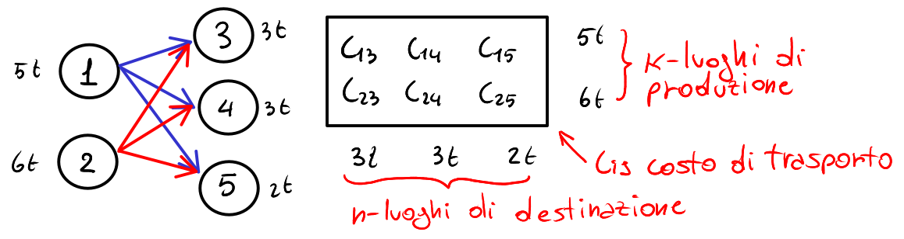
Figura 3:Problema di trasporto rappresentato da un grafo.
x=(x13, x14, x15, x23, x24, x25). ⏨x=(3,2,0,0,1,2) è una soluzione ammissibile.Modello matematico:a
minc13x13+x14c14+x15c15+x23c23+x24c24+x25c25
vincoli di produzione: a
x13+x14+x15⩽5
x23+x24+x25⩽6
vincoli di destinazione: a
x13+x23⩾3
x14+x24⩾3
x15+x25⩾2
xij⩾0
Nei vincoli di destinazione ci va ⩾ perché si ipotizza che un acquirente accetti volentieri delle tonnellate di cocaina aggiuntive da mettere in stoccaggio.
Problema di trasporto:Determinare il modo più efficiente di distribuire una certa quantità di merce da più punti di origine (magazzini, fabbriche) a più punti di destinazione (clienti, magazzini di distribuzione), minimizzando i costi di trasporto.(p)a
minm∑i=1n∑j=1cijxij
m∑i=1xij⩾dj∀j=1,…,n
n∑j=1xij⩽oi∀i=1,…,m
xij⩾0
4. Teoria della PLEnunciamo tre teoremi che ci aiutano a trovare una soluzione ottima a problemi di PL. Prima, però, alcune definizioni teoriche.
Definizione (combinazione convessa):Siano x1,…,xk∈Rn, y∈Rny si dice combinazione convessa di x1,…,xk se ∃𝜆1,…,𝜆k∈[0,1],k∑i=1𝜆i=1 t.c. y=k∑i=1𝜆ixiOvvero se esistono k-coefficienti 𝜆i tra 0 e 1, a somma 1 tali che y=𝜆1xi+…+𝜆kxk
Questo concetto è molto simile alla combinazione lineare di {x1,…,xk}, solo che i coefficienti 𝜆i hanno delle proprietà aggiuntive.
Definizione (involucro convesso):L'involucro convesso di x1,…,xk(conv{x1,…,xk}) è l'insieme di tutte le possibili combinazioni convesse di xk,…,xk.
Esempi (R2):• k=1⟹y=𝜆1x1=1x1, le combinazioni convesse di un punto sono il punto stesso• k=2⟹y=𝜆1x1+𝜆2x2=𝜆x1+(1-𝜆)x2 dove 𝜆=𝜆1+𝜆2, 𝜆∈[0,1]• conv{x1,x2} è il segmento che congiunge x1,x2• k=3⟹conv{x1,x2,x3} è il triangolo che ha come vertici i punti x1,x2,x3. Questo si vede ponendo a zero uno dei punti (𝜆i=0), ottenendo come conv il segmento che congiunge gli altri due.
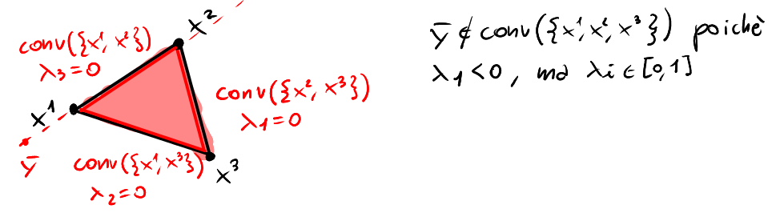
Figura 4:conv{x1,x2,x3}
Ricordiamo che un insieme convesso K è un insieme dove il segmento che congiunge due punti qualsiasi "non esce" dall'insieme, ovvero 𝜆x1+(1-𝜆)x2∈K ∀x1,x2,𝜆∈[0,1].Si può dimostrare che conv{x1,…,xk} è il più piccolo insieme convesso che contiene x1,…,xk∴un insieme convesso K coincide con il suo conv(K).
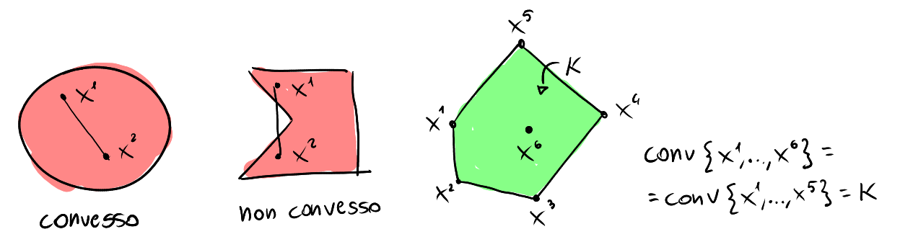
Figura 5:Insiemi convessi e non convessi, K convesso = conv(K)
Definizione (combinazione conica):Siano x1,…,xk∈Rn, y∈Rny si dice combinazione conica di x1,…,xk se ∃𝜆1,…,𝜆k∈R+ t.c. y=k∑i=1𝜆ixiOvvero se esistono k-coefficienti 𝜆i positivi tali che y=𝜆1xi+…+𝜆kxk
Definizione (cono):Un cono K è un insieme tale che se contiene un punto di K, diverso dall'origine, allora contiene anche tutta la semiretta uscente dall'origine passante per quel punto. Ovvero 𝜆x∈K ∀x∈K, 𝜆⩾0.
I coni possono essere convessi o non. A noi interesseranno i coni convessi.
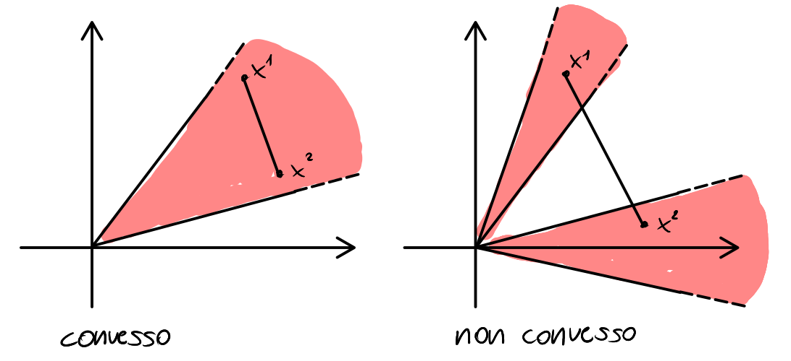
Figura 6:Cono convesso e cono non convesso
Definizione (involucro conico):L'involucro conico di x1,…,xk(cono{x1,…,xk}) è l'insieme di tutte le possibili combinazioni coniche di xk,…,xk.
Similmente all'involucro convesso, si può dimostrare che cono{x1,…,xk} è il più piccolo cono convesso che contiene x1,…,xk∴un cono convesso K coincide con il suo cono(K).Per esempio, per k=1, cono(x1) è una retta; per k=2,cono(x1,x2) è un cono convesso come nella figura precedente, dove x1,x2 sono punti del bordo.Esempio:cono{(1,0),(0,1),(1,1)}=cono{(1,0),(0,1)} è il primo quadrante poiché (1,1) è una combinazione conica di (1,0),(0,1) ovvero (1,1) è conicamente dipendente dagli altri due vettori.4.1. Teorema di rappresentazione dei poliedriO anche chiamato Teorema di Weil, il primo teorema del corso ci fornisce una rappresentazione di un poliedro, ovvero una condizione necessaria e sufficiente per caratterizzarlo.
Teorema (di rappresentazione dei poliedri):Dato un poliedro P={Ax⩽b}, allora∃V={v1,…,vk}⊆P,∃E={e1,…,ep}⊂Rn t.c. P=conv(V)+cono(E)
La somma tra insiemi P=conv(V)+cono(E) significa {a+b:a∈conv(V), b∈cono(E)}Esempi:
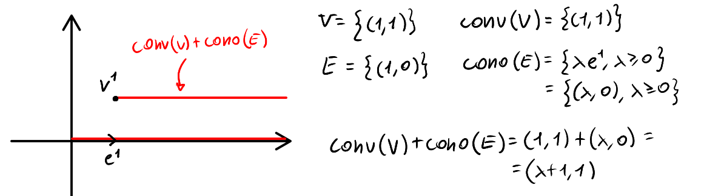
Figura 7:vettori 𝜆e1 applicati a un punto
Conviene considerare V come un insieme di punti e E come un insieme di vettori: sommare conv(V)+cono(E) significa applicare i vettori di Esui punti di V.
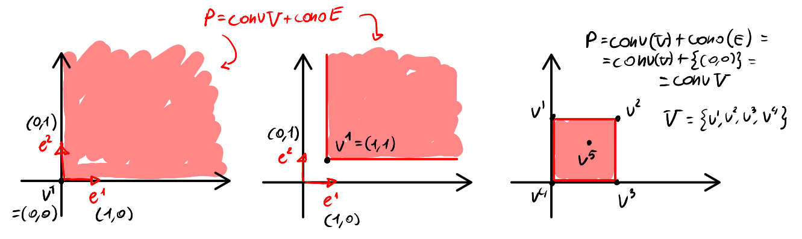
Figura 8:Altri esempi di conv(V)+cono(E)
È importante sapersi muovere tra le tre forme dei poliedri: algebrica (Ax⩽b), geometrica (intersezione di sottospazi) e forma di Weil (conv(V)+cono(E))4.2. Teorema fondamentale della PLIl teorema fondamentale della PL, combinato al Teorema di Weil e ad altre considerazioni, ci permette di giungere a un importante risultato per la risoluzione di problemi di PL.
Teorema (fondamentale della PL):Sia (p)=a
maxcT⋅x
Ax⩽b
un problema di PL in forma primale standard, e sia V,E la rappresentazione del poliedro in forma di Weil. Vale una delle tre opzioni:1. P=∅, per cui ci sono troppi vincoli2. maxcTx=+∞, ho dimenticato vincoli3. ∃r∈{1,…,k}:vr∈V è soluzione ottima di (p)
Ovvero, se il poliedro non è vuoto e il problema è limitato, esiste un elemento di V che è soluzione ottima.Dimostrazione:Sia dato un problema di PL in formato primale standard, e sia ⏨x∈P una soluzione ammissibile.⏨x=conv(V)+cono(E)=k∑i=1⏨𝜆ivi+p∑i=1⏨𝜇iei dove ⏨𝜆i∈[0,1], 𝛴⏨𝜆i=1,⏨𝜇i⩾0cT⋅⏨x=k∑i=1⏨𝜆i(vi⋅cT)+p∑i=1⏨𝜇i(ei⋅c)Se un solo prodotto scalare ei⋅c>0, allora (p)=+∞.Se i prodotti scalari ei⋅c⩽0∀i, allora la soluzione di maxcT⋅x=c⋅vr è il vr più alto tra tutti i vi□• Per verificare che P≠∅ basta trovare una soluzione ammissibile• Per verificare che (p)<+∞ devo fare i prodotti scalari cTej∀j=1…p. Se solo uno di questi prodotti scalari è positivo, allora (p)=+∞. Il problema è che non ho un algoritmo per calcolare gli ej. Quindi potrebbe tornare utile una verifica geometrica, disegnando il poliedro.
Definizione (vertice):Sia P un poliedro. Un punto ⏨x∈P si dice vertice se non si può esprimere come combinazione convessa di due punti di P diversi da ⏨x. (i.e. combinazione convessa propria)
Proposizione 1: se il poliedro P è limitato, allora E={0} quindi cono(E)=∅ i.e. non ci sono direzioni di recessione (gli "insostituibili" di E). Inoltre, i poliedri limitati hanno vertici.Proposizione 2: i vertici sono gli unici punti insostituibili nella combinazione convessa della rappresentazione di Weil, per cui, se il poliedro P ha vertici, allora V={vert(P)}Combinandole assieme: Se P è limitato, P=conv(V)+cono(E)=conv{vert(P)}
Attenzione: un poliedro può non avere vertici, ma posso comunque trovare la sua rappresentazione di Weil. I poliedri senza vertici in R2 sono i semipiani, le striscie e le rette.
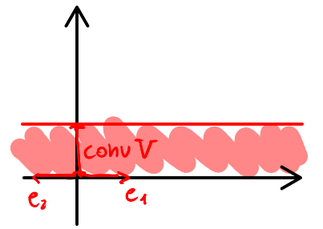
Figura 9:Poliedro senza vertici
Osservazione: i poliedri senza vertici sono quelli che contengono una retta. Se nei vincoli c'è x⩾0, allora il poliedro ha almeno un vertice.Combiniamo ora le proposizioni e il teorema fondamentale della PL per giungere a un importante risultato.1. Per le proposizioni 1 e 2: se P è limitato allora P=conv(vert(P))2. Per il teorema fondamentale della PL: se P≠∅ e P è limitato (quindi (p)<+∞), allora esiste almeno un elemento di V=vert(P) che è soluzione ottima di (p). I poliedri nonvuoti di ricerca operativa, essendo limitati, hanno almeno un vertice che è soluzione ottima!4.3. Calcolo dei verticiOra che abbiamo dimostrato che possiamo cercare le soluzioni ottime nei vertici, calcoliamo i vertici del poliedro Ax⩽bin formato primale standard.
Definizione (soluzione di base):Sia B:={1,…,m}:|B|=n un sottoinsieme degli indici di rigaSia AB la sottomatrice di A che ha le righe individuate dagli indici di BSia bB il sottovettore di b individuato dagli indici di BSe AB è invertibile, ovvero detAB≠0, allora la soluzione del sistema AB⋅x=bB si chiama soluzione di base. Formula chiusa: x=A-1BbB
Esempio: n=2, m=4Ax⩽b≡a
1. x1+2x2⩽6
2. 3x1+x2⩽7
3. -x1⩽0
4. -x2⩽0
B:={3,4}A=a
1
2
3
1
-1
0
0
-1
⟹AB=a
-1
0
0
-1
, b=a
6
7
0
0
⟹bB=a
0
0
A=a
AB
AN
, b=a
bB
bN
⟹Ax⩽b∴a
ABx⩽bB
ANx⩽bN
det(AB)≠0∴AB⋅⏨x=bB⟺a
-1
0
0
-1
a
⏨x1
⏨x2
=a
0
0
⟺⏨x=(0,0) è la soluzione di baseSe il determinante fosse zero, le rette sarebbero parallele o coincidenti, dunque non ci sarebbe un vertice. In pratica devo fare l'intersezione di n-rette.
Definizione (soluzione di base ammissibile):Una soluzione di base si dice ammissibile se appartiene al poliedro.
Esempio:Nell'esempio precedente, ⏨x=(0,0) è soluzione di base ammissibile perché non viola nessun vincolo del poliedro. Se prendo come base B={1,4}, si può verificare che ⏨x=(6,0), che non è una base ammissibile.
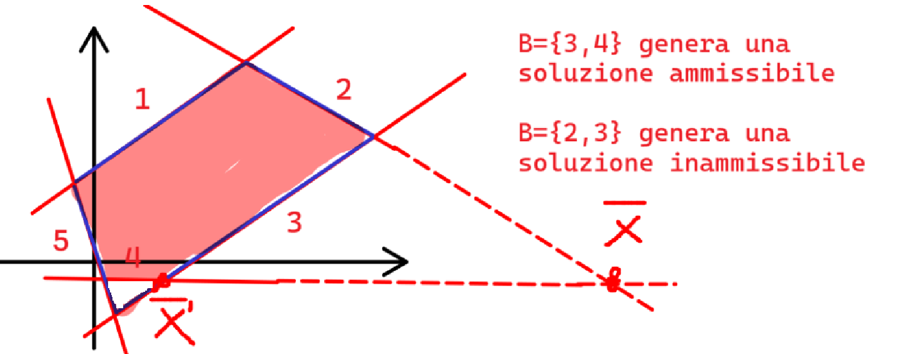
Figura 10:significato geometrico delle soluzioni di base ammissibili
Teorema (caratterizzazione dei vertici):Un punto ⏨x del poliedro è un vertice se e solo se è una soluzione di base ammissibile
Questo teorema è una definizione alternativa di vertice. In questo caso, l'altra definizione di vertice che abbiamo dato può essere usata come una proprietà.
Definizione (soluzione di base degenere):La soluzione di base ⏨x si dice degenere se più basi generano ⏨x.
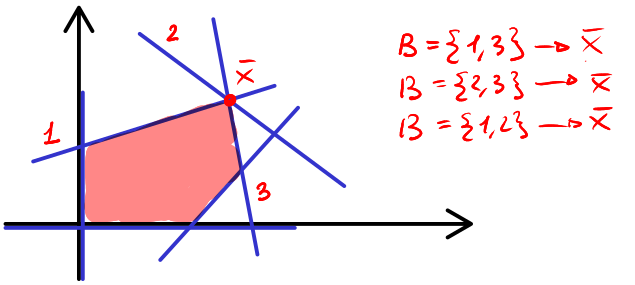
Degenere non vuol dire eliminabile (ma vale solo in R2). Addirittura non esistono algoritmi per verificare se un vincolo è combinazione lineare di altri vincoli (per cui sarebbe eliminabile).Pro tip: un punto è soluzione di base se rispetta n vincoli con l'uguale. Un punto è soluzione di base degenere se ne rispetta almeno n+1.
Algoritmo di enumerazione totale:Esplora tutti i vertici (ovvero tutte le possibili soluzioni di base ammissibili) per trovare quello ottimale. Il problema con questo algoritmo è che bisogna calcolare le possibili basi, che sono le combinazioni di n elementi presi da un basket di m:a
m
n
=m!
n!(m-n)!La complessità è fattoriale, dunque è parecchio inefficiente.
4.4. Trasformazioni equivalentiMantengono inalterati i punti di ottimo e il valore della funzione obiettivo, ma modificano la forma del problema. Sono utili per convertire problemi in forme standard.
Trasformazioni equivalenti:
• min⟷max• ⩽⟷⩾• =→⩽,⩾• ⩽→=,Slack• x⩾0→x++i,x+i⩾0
min(f)=-max(-f)x⩽x0⟺-x⩾-x0x=x0⟹x⩾x0, x⩽x0x⩽x0⟹x=x0+S, S⩾0x⩾0⟹xi=x++i-x+i con x++i⩾x+i⩾0 ∀i
A cosa serve l'ultima trasformazione equivalente? Ad esempio:(p)a
min3x1+x2
5x1+x2⩾7
x1⩾0
, portare in formato standard (q)a
mincTx
Ax⩾b
x⩾0
Non posso semplicemente aggiungere la condizione x2⩾0 perché il primo problema non ci dice niente sul suo segno: x2 potrebbe essere negativo e i vincoli sarebbero comunque rispettati. Allora osservo che ogni numero in Z si può scrivere come differenza di due numeri positivi.a
min3x1+x2
5x1+x++2-x+2⩾7
x1,x++2,x+2⩾0
≡a
min3x1+x++2-x+2
5x1+x++2-x+2⩾7
x⩾0
Devo sostituire x2 anche nella funzione obbiettivo per ottenere un sistema in tre incognite.Osservo che, se x'=(6,3,2) è una soluzione ammissibile di (q), allora x''=(6,3-2)=(6,1) è una soluzione ammissibile di (p).4.5. Teoria della dualità4.5.1. Vertici del poligono in formato duale standardC'è un modo molto più rapido per calcolare i vertici di un poligono in formato duale standard. Sdoppiare le uguaglianze per portare il poliedro in formato primale standard significa avere tante righe che sono linearmente dipendenti.
Definizione (soluzione di base duale):Si divide la variabile x=(x1,…,xn) in blocco di base xB e blocco non di base xNxB∈Rk dove k è il numero di equazioni.Pongo xN=0, mi assicuro che il sistema di k equazioni in k incognite abbia soluzione (matrice invertibile) e risolvo per xB. Ricostruisco x=(xB, xN)
Simile alla definizione per il formato primale standard, ma anziché le righe si prendono le variabili.
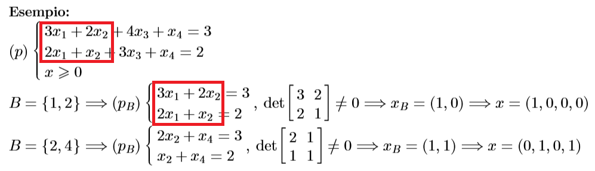
Le definizioni di soluzione di base ammissibile e degenere e il teorema di caratterizzazione dei vertici sono facilmente adattabili alle soluzioni di base duali.Osservazione: ⏨x soddisfa il vincolo A⏨x=b per costruzione. Quindi, per ferificare se ⏨x è una soluzione di base ammissibile, mi basta che ⏨x⩾04.5.2. Test di ottimalitàDato un vertice ⏨x di P, come faccio a sapere che sono arrivato all'ottimo (senza enumerare tutti i vertici)?(p)a
maxcTx
Ax⩽b
, il suo problema duale è (d)=a
minyTb
yTA=c
y⩾0
dove c,x∈Rn, y,b∈Rm sono vettori colonna. A∈Rm×nIl problema primale ha n variabili e m vincoli, il duale ha m variabili e n vincoli.Il problema duale è completamente diverso dall'originale, questa forma non ha a che vedere con le trasformazioni equivalenti.Esempio:(p)a
maxx1-x2
3x1+2x2⩽8
-x1+x2⩽6
3x1-2x2⩽9
, A=a
3
2
-1
1
3
-2
→(d)a
min8y1+6y2+9y3
3y1-y2+3y3=1
2y1+y2-2y3=-1
y⩾0
Teorema (scarti complementari):Sia ⏨x∈P,⏨y∈D soluzioni ammissibili.⏨x,⏨ysono soluzioni ottime (rispettivamente di (p) e (d)) ⟺⏨y⋅(b-A⏨x)=0Dove ⏨y⋅(b-A⏨x)=0 si chiama condizione degli scarti complementari.
Osservazioni:1. Due soluzioni di base ⏨x,⏨y complementari (generate dalla stessa base) sono sempre in scarti complementari.2. Essendo (d) in forma duale standard, se ⏨y è una soluzione di base dual, allora se ⏨y⩾0, è anche ammissibile.
Test di ottimalità:Oss. 1→ Dato un vertice ⏨x generato dalla base B, costruiamo la ⏨y con la stessa base B.Oss. 2→ Se ⏨y⩾0, cioè c(ATB)-1⩾0, per il th. degli scarti complementari, ⏨x è ottima.
Esempio:(p)a
max3x1+2x2
5x1+6x2⩽9
3x1+8x2⩽7
-x1⩽0
-x2⩽0
→(d)a
min9y1+7y2
5y1+3y2-y3=3
6y1+8y2-y4=2
So che ⏨x=(0,0) è generato dalla base B={3,4} ed è ammissibile, quindi è un vertice. ⏨x è ottimo?B={3,4},a
min9y1+7y2
-y3=3
-y4=2
⟹⏨y=(0,0,-3,-2)<0, quindi ⏨x non è l'ottimo.
Teorema (dualità forte):Sia (p) un problema primale e (p) il suo duale. Siano P,D≠∅Il valore ottimo del primale coincide con quello del problema duale i.e.
maxcx
Ax⩽b=
minyb
yA=c, y⩾0
Allora esiste il test di ottimalità anche per il problema duale: sia una soluzione di base ammissibile ⏨y∈D, cioè un vertice del duale; costruiamo la soluzione di base (con la stessa base) del primale associato, ⏨x. Se ⏨x è ammissibile i.e.b-A⏨x⩾0 siamo all'ottimo. L'operazione di duale è involutoria: il duale del duale è il primale, quindi i problemi di PL vanno sempre in coppia, e uno diventa il test di ottimalità dell'altro. 5. Algoritmo del simplessoL'algoritmo del simplesso è stato ideato da George Dantzig nel 1946, mentre stava lavorando sui metodi di pianificazione dell'aeronautica militare degli Stati Uniti. L'idea fondamentale dell'algoritmo è partire da un vertice e spostarsi lungo gli spigoli di vertice in vertice, fino a raggiungere l'ottimo.
Storytime: Correva l'anno 1984. Arriva una notizia rivoluzionaria nel mondo della programmazione lineare: il matematico indiano Karmarkar ha scoperto un algoritmo polinomiale per risolvere problemi di PL. Massimo Pappalardo, incuriosito dalla scoperta, parte per l’America per assistere alla presentazione. L'aula è gremita di studiosi e matematici. Alle 9:00 in punto, l'indiano entra accompagnato dalle guardie del corpo. Con grande serietà, comincia la presentazione: sfodera dei lucidi e li proietta a una velocità impressionante, circa tre secondi per diapositiva. Nelle prime file, alcuni scattano freneticamente fotografie per catturare ogni dettaglio.In circa 30 pagine di lucidi, l’indiano dimostra come sia possibile costruire un algoritmo polinomiale che, a differenza del metodo del simplesso, non si muove da un vertice all’altro del poliedro, ma va direttamente verso il punto di ottimo. Dopo un anno, arriva la magna sentenza: l’algoritmo è corretto. Nonostante questa scoperta rivoluzionaria, anche dopo 40 anni, l'algoritmo del simplesso continua a dimostrarsi più efficace nella pratica rispetto all'algoritmo dei punti interni, pur essendo esponenziale.
5.1. Algoritmo del simplesso primaleSia (p)a
maxcx
Ax⩽b
un problema di PL in formato primale standard5.1.1. Passo baseSupponiamo di avere un vertice ⏨x∈P,⏨x=A-1BbBCostruiamo ⏨y=(cA-1B,0) la soluzione di base duale complementare. Se ⏨yB⩾0 siamo all'ottimo. Altrimenti ∃k∈B:⏨yK<05.1.2. Passo induttivoIdea: Se non siamo all'ottimo, effettuo un cambio di base. C'è un indice h uscente e un indice k entrante in base. In altre parole mi sposto lungo lo spigolo a un vertice adiacente. In generale, in Rn, tra vertici adiacenti, ci sono n-1 indici uguali.
Trovo l'indice uscente:voglio che lo spostamento produca un aumento della funzione obiettivo cx.
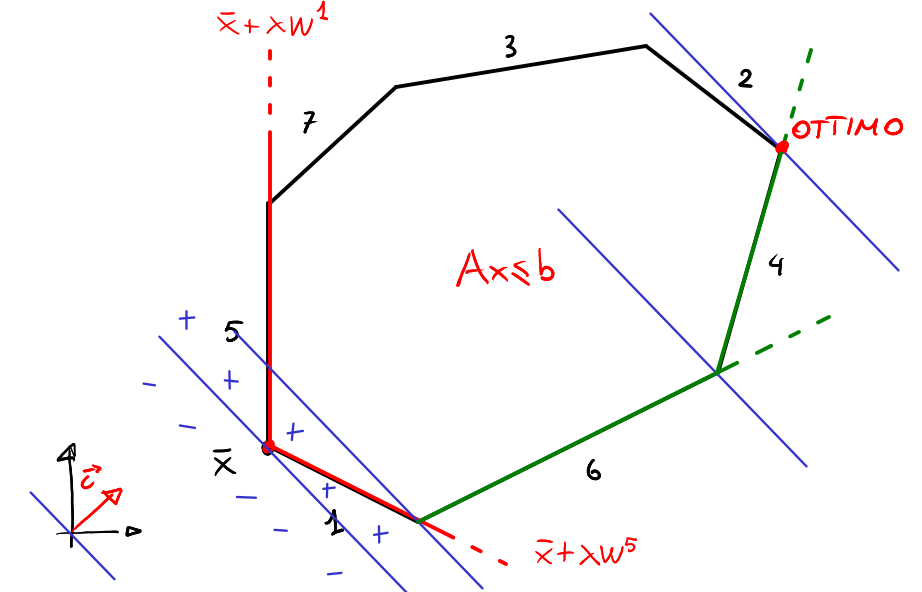
Figura 11:algoritmo del simplesso con vertice iniziale ⏨x e tre passi induttivi.
Proposizione:Sia W:=-A-1B, siano Wi le colonne di W.⏨x+𝜆Wi,𝜆⩾0 è l'equazione della semiretta uscente da ⏨x con direzione di Wi (attenzione, non mi sto muovendo lungo lo spigolo i, ma lungo quello adiacente).
Calcolo la funzione obbiettivo lungo la semiretta:c(⏨x+𝜆Wi)=c⏨x+𝜆cWi dove c⏨x è il valore della funzione obbiettivo corrente, 𝜆⩾0 sempre. Quindi, per far crescere la funzione obbiettivo mi serve che cWi sia positivo. Osservo che cWi=c(-A-1B)i=-c(A-1B)i=-⏨yi.Questo è coerente con il fatto che se ⏨yi⩾0⟹cWi⩽0 ovvero siamo all'ottimo. Dunque se non trovo una yi⩾0 vuol dire che lo spostamento nella direzione dei vertici adiacenti produce sempre un aumento della funzione obiettivo. Ma quale devo scegliere?Regola di anticiclo di Bland: Scelgo il primo indice per cui la duale è negativa. h=min{i∈B:yi<0}. Questo si fa per garantire che l'algoritmo non entri in un ciclo e quindi termini in un numero finito di passi.Ad esempio: ⏨y=(0,7,-4,0,0,-5)⟹h=3.
Trovo l'indice entrante:A(⏨x+𝜆Wh)?
⩽b
, mi chiedo per quali 𝜆 rimango dentro al poliedro?Prendo gli indici i che si dividono in base e non base: Ai(⏨x+𝜆Wh)?
⩽bi
,{i∈B∨i∈N},per la proprietà distributiva: Ai⏨x+𝜆AiWh⩽biVediamo il caso per i vertici di base:Poiché i∈B, allora Ai⏨x=bi. bi+𝜆AiWh⩽bi⟹𝜆AiWh⩽0, poiché 𝜆⩾0, mi interessa il segno di AiWh=Ai(-A-1B)h.Se moltiplico una riga di AB per una colonna di A-1B fa 0 oppure 1 perché fa l'identità. Siccome è scambiata di segno, fa 0 oppure -1. In ogni caso vale sempre AiWh⩽0. Non ci sono problemi per ogni indice di base: non è possibile uscire dal poliedro "per colpa" di un indice di base.Vediamo il caso per i vertici non di base:Se AiWh⩽0 ∀i∈N significa che posso procedere all'infinito, (p)=+∞
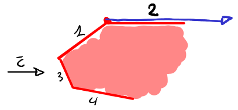
Se ∃i:AiWh>0, allora Ai⏨x+𝜆AiWh⩽bi⟺𝜆⩽bi-Ai⏨x
AiWh=:riCalcolo solo gli ri dove AiWh>0 poiché gli altri non hanno conseguenze sull'uscita del poliedro (calcolo al più m-n rapporti). Per non uscire dal poliedro devo prendere.min{ri=bi-Ai⏨x
AiWh:i∈N, AiWh>0}Anche qui si applica la regola di anticiclo di Bland: prendo l'indice entrante k come il primo i nel caso in cui ci siano due rapporti ri minimi uguali.⏨𝜆=bk-Ak⏨x
AkWh è il massimo 𝜆 che posso prendere per rimanere dentro al poliedro.Oss: Ai⏨x+bk-Ak⏨x
AkWhAiWhai=k=bk vuol dire che l'indice k è soddisfatto con l'uguale.
Algoritmo del simplesso primale1. Trova una base B che genera una soluzione di base primale ammissibile ⏨x:=A-1BbB2. Calcola la soluzione di base duale ⏨y:=a
⏨yB
⏨yN
con ⏨yTB:=cTA-1B,⏨yN:=03. ifyB⩾0then STOP (x è ottima per (p) e y è ottima per (d)). else calcola l'indice uscente h:=min{i∈B:⏨yi<0} poni W:=-A-1B e indica Wh la h-esima colonna di W.4. if AiWh⩽0 ∀i∈Nthen STOP ((p)=+∞,(d)=∅) else poni ri:=bi-Ai⏨x
AiWh se i∈N,AiWh>0 e calcola ⏨𝜆:=min{ri} calcola l'indice entrante k:=min{i:bi-Ai⏨x
AiWh=⏨𝜆} aggiorna la base B:=B⧵{h}∪{k} e torna al passo 2.
5.2. Algoritmo del simplesso dualeRicordiamo come i problemi di PL vanno sempre a coppie primale/duale. Distinguo quattro casi:• Soluzione di base ammissibile per (p), (d)→siamo all'ottimo• Soluzione di base ammissibile per (p), non ammissibile per (d)→simplesso primale• Soluzione di base ammissibile per (d), non ammissibile per (p)→simplesso duale• Soluzione di base non ammissibile per (p),(d)→trovo un'altra soluzione di base.Sia ⏨y∈D la soluzione di base ammissibile (vertice di D)Sia (p)a
maxcx
Ax⩽b
un problema di PL in formato primale standard5.2.1. Passo baseSupponiamo di avere un vertice ⏨y∈D,⏨y=(⏨yB,⏨yN)=(cTA-1B,0):cTAB⩾0Se ⏨x è ammissibile ovvero bi-Ai⏨x⩾0, allora siamo all'ottimo.5.2.2. Passo induttivoIndice entrante: Altrimenti, sia k il primo (anticiclo) indice i∈N tale che bk-Ak⏨x<0.Indice uscente: faccio i prodotti scalari AkWi (k l'ho già trovato e devo trovare i∈B uscente). Prendo solo AkWi<0 (se sono tutti ⩾0 allora (d)=-∞) e trovo il minimo di ri:=-yi
AkWi. h è il primo degli indici per cui viene raggiunto il minimo
Algoritmo del simplesso primale1. Trova una base B che genera una soluzione di base primale ammissibile ⏨y:=a
⏨yB
⏨yN
con ⏨yTB:=cTA-1B,⏨yN:=02. Calcola la soluzione di base duale ⏨x:=A-1BbB3. ifbN-AN⏨x⩾0then STOP (⏨y è ottima per (d) e ⏨x è ottima per (p)). else calcola l'indice entrante k:=min{i∈N:⏨yi<0} poni W:=-A-1B e indica Wi la i-esima colonna di W.4. if AkWi⩾0 ∀i∈Bthen STOP ((d)=-∞,(p)=∅) else poni ri:=yi
-AkWi se i∈B,AkWi<0 e calcola ⏨𝜆:=min{ri} calcola l'indice uscente h:=min{i:yi
-AkWi=⏨𝜆} aggiorna la base B:=B⧵{h}∪{k} e torna al passo 2.
5.3. Problema duale ausiliarioNon sempre ho a disposizione un vertice per iniziare l'algoritmo del simplesso. Vediamo un modo per trovare sicuramente un vertice da cui partire.
Definizione (duale ausiliario):Sia D=a
Ax=b
x⩾0
un poliedro in formato duale std, dove A∈Rn×m, x∈Rm, b∈RnIl problema duale ausiliario è (da)a
maxm∑i=1𝜖i
Ax+I𝜖=b
x,𝜖⩾0
Ad esempio: D=a
3x1+5x2+6x3+x4=8
2x1+3x2+7x3+3x4=9
x⩾0
→(da)a
min𝜖1+𝜖2
3x1+5x2+6x3+x4+𝜖1=8
2x1+3x2+7x3+3x4+𝜖2=9
x,𝜖⩾0
Teorema:Sia v(da) il valore ottimo di (da).• Se v(da)>0,allora D=∅• Se v(da)=0, allora D≠∅Inoltre, se D≠∅, la soluzione ottima di (da) ci fornisce un vertice di D.
Mi accorgo che esiste una soluzione di base ammissibile banale, ovvero quella ottenuta settando a zero tutti gli xi. Dall'esempio di prima, (⏨x,⏨𝜖)=(0,0,0,0,8,9)∈vert(DA).Il teorema ci dice anche che, se il poliedro non è vuoto, basta risolvere il problema duale ausiliario col metodo del simplesso duale per trovare un vertice del problema di partenza. In questo modo, riusciamo a trovare sempre un vertice di ogni poliedro (a patto che esista).5.4. Il caso degenereGrazie alla regola di anticiclo di Bland, nel caso degenere, se ⏨𝜆=bk-Ak⏨x
AkWh=0 sempre, siamo arrivati all'ottimo. Altrimenti, il denominatore prima o poi diventerà negativo e quindi mi sposto. Questo ci garantisce che l'algoritmo del simplesso non cicla nei vertici degeneri. L'algoritmo del simplesso cambia basi ad ogni passo, non i vertici.Esempio:
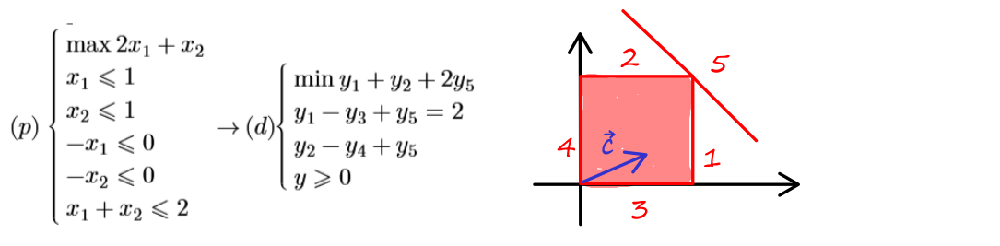
Prendo la base B={1,2},⏨x=(1,1)⟷⏨y=(2,1,0,0,0)Prendo la base B={1,5},⏨x=(1,1)⟷⏨y=(1,1,0,0,1)Prendo la base B={2,5},⏨x=(1,1)⟷⏨y=(0,-1,0,0,2)Supponiamo di partire col simplesso primale dalla base B''={2,5}. Il simplesso non si accorge che il punto è ottimo, ma solo riconoscere quando la base è ottima. Cambia base: esce h=2, entra k=1. Poi dichiara ottima la base B'={1,5}.